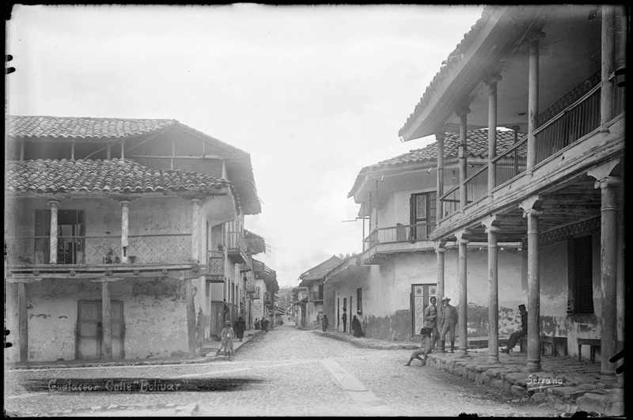
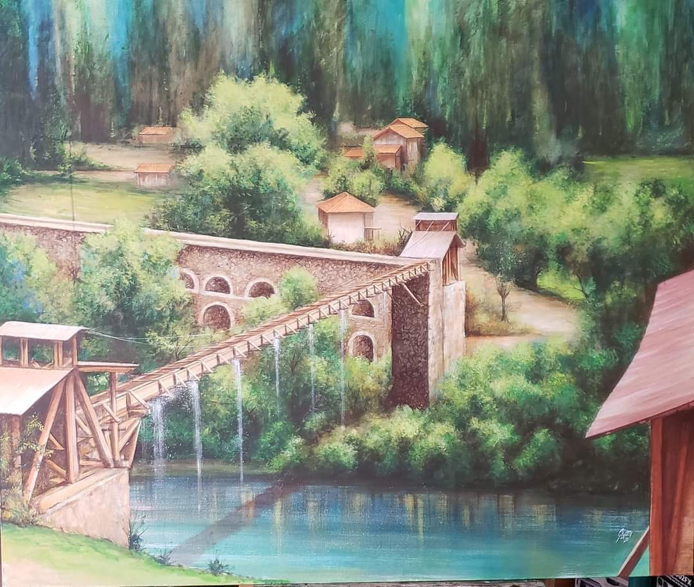

<ion-split-pane contentId="content2" [disabled]="!paneEnabled">
  <ion-menu contentId="content2" menuId="second">

    <ion-header>
      <ion-toolbar color="primary">
        <ion-title>Menu 2</ion-title>
      </ion-toolbar>
    </ion-header>

    <ion-content>
      <ion-list>
        <ion-menu-toggle auto-hide="false" menu="second">

        <ion-item routerLink="../../login" routerDirection="root" routerLinkActive="active-item">
          <ion-label>Login</ion-label> 
        </ion-item>

        </ion-menu-toggle>
      </ion-list>
    </ion-content>
  </ion-menu>

  <ion-router-outlet id="content2"></ion-router-outlet>
</ion-split-pane>

  <ion-list>
    <ion-item detail href="../iglesia-matriz/">
        
      <ion-label>
        <h2>Iglesia de Gualaceo</h2>
        <p>Ubicacion: <a href="https://maps.google.com/?q=-2.889692978845055, -78.77878400341795">Aqui</a></p>
      </ion-label>
    </ion-item>
    <ion-item detail href="../calle/">
        
      <ion-label>
        <h2>Calle Gran Colombia</h2>
        <p>Ubicacion: <a href="https://maps.google.com/?q=-2.8899217627170795, -78.77957520358747">Aqui</a></p>
      </ion-label>
    </ion-item>
    <ion-item detail href="../acueducto/">
        
      <ion-label>
        <h2>Canal de riego</h2>
        <p>Ubicacion: <a href="https://maps.google.com/?q=-2.903407969576315, -78.77972910708982">Aqui</a></p>
      </ion-label>
    </ion-item>
  </ion-list>